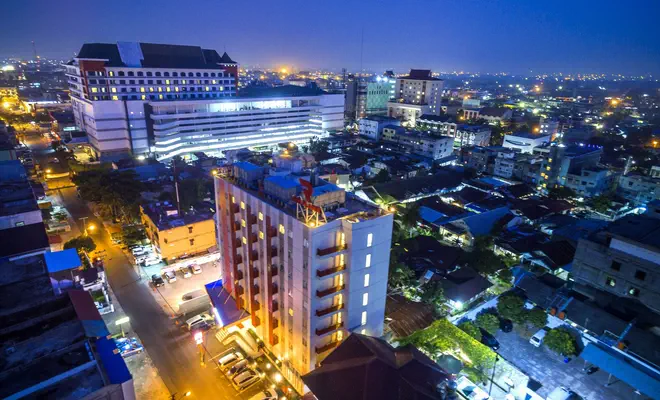
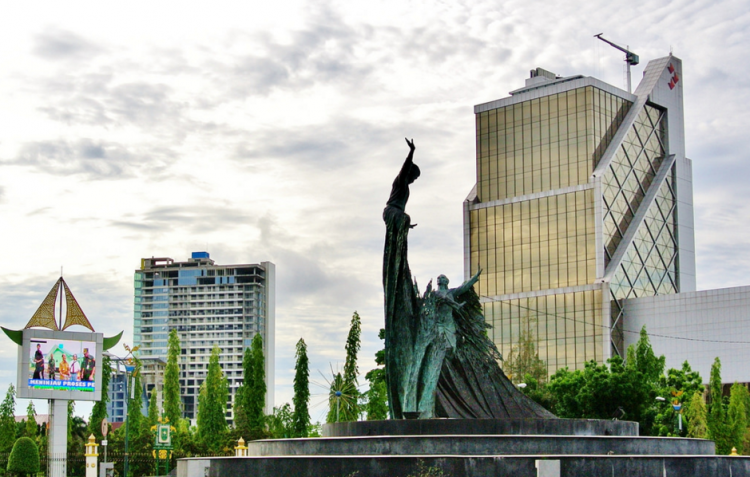

Kota Pekanbaru adalah ibu kota dan kota terbesar di Provinsi Riau, Indonesia. Kota ini merupakan salah satu sentra ekonomi terbesar di Pulau Sumatra dan termasuk kota dengan tingkat pertumbuhan, migrasi, dan urbanisasi yang tinggi.

Pekanbaru terletak di tepian Sungai Siak dan pada awalnya merupakan sebuah kota kecil yang memiliki pasar (pekan) yang bernama Payung Sekaki atau Senapelan. Pada abad ke-18, wilayah yang kini menjadi Pekanbaru berada pada lingkar pengaruh Kesultanan Siak, dan Sultan Abdul Jalil Alamuddin Syah ("Marhum Pekan") secara luas dianggap sebagai pendiri kota Pekanbaru modern; hari jadi kota ini ditetapkan pada tanggal 23 Juni 1784. Pekanbaru menjadi sebuah "kota kecil" pada tahun 1948 dan kotapraja pada tahun 1956, sebelum ditetapkan menjadi ibu kota provinsi Riau sebagai pengganti dari Tanjung Pinang pada tahun 1959.
Perekonomian Pekanbaru didukung oleh perdagangan dan pertambangan minyak bumi. Kota ini memiliki sebuah bandar udara internasional, terminal bus antar kota dan antar provinsi, serta dua pelabuhan. Populasi Pekanbaru bersifat kosmopolitan, dipengaruhi oleh letak strategisnya di tengah-tengah Lintas Timur Jalan Raya Lintas Sumatra. Beberapa etnis yang memiliki populasi signifikan di kota ini antara lain adalah suku Minangkabau, Orang Ocu, Melayu, Jawa, Batak, dan Tionghoa.

Perkembangan kota ini pada awalnya tidak terlepas dari fungsi Sungai Siak sebagai sarana transportasi dalam mendistribusikan hasil bumi dari pedalaman dan dataran tinggi Minangkabau ke wilayah pesisir Selat Malaka. Pada abad ke-18, wilayah Senapelan di tepi Sungai Siak, menjadi pasar (pekan) bagi para pedagang Minangkabau.[8] Seiring dengan berjalannya waktu, daerah ini berkembang menjadi tempat permukiman yang ramai. Sultan Siak ke-4 Sultan Alamuddin Syah memindahkan pusat kekuasaan Siak dari Mempura ke Senapelan pada tahun 1762.[9][10] Pada tanggal 23 Juni 1784, berdasarkan musyawarah "Dewan Menteri" dari Kesultanan Siak, yang terdiri dari datuk empat suku (Pesisir, Limapuluh, Tanah Datar, dan Kampar), kawasan ini dinamai dengan Pekanbaru, dan dikemudian hari diperingati sebagai hari jadi kota ini.[10][11]
Berdasarkan Besluit van Het Inlandsch Zelfbestuur van Siak No. 1 tanggal 19 Oktober 1919, Pekanbaru menjadi bagian distrik dari Kesultanan Siak. Namun pada tahun 1931, Pekanbaru dimasukkan ke dalam wilayah Kampar Kiri yang dikepalai oleh seorang controleur yang berkedudukan di Pekanbaru dan berstatus landschap sampai tahun 1940. Kemudian menjadi ibu kota Onderafdeling Kampar Kiri sampai tahun 1942.[12] Setelah pendudukan Jepang pada tanggal 8 Maret 1942, Pekanbaru dikepalai oleh seorang gubernur militer yang disebut gokung.[butuh rujukan]
Selepas kemerdekaan Indonesia, berdasarkan Ketetapan Gubernur Sumatra di Medan tanggal 7 Mei 1946 Nomor 103, Pekanbaru dijadikan daerah otonom yang disebut haminte (kotapraja).[10] Kemudian pada tanggal 19 Maret 1956, berdasarkan Undang-undang Nomor 8 Tahun 1956, Pekanbaru (Pakanbaru) menjadi daerah otonom kota kecil dalam lingkungan Provinsi Sumatra Tengah.[13] Selanjutnya sejak tanggal 9 Agustus 1957 berdasarkan Undang-undang Darurat Nomor 19 Tahun 1957, Pekanbaru masuk ke dalam wilayah Provinsi Riau yang baru terbentuk.[14]
Kota Pekanbaru resmi menjadi ibu kota Provinsi Riau pada tanggal 20 Januari 1959 berdasarkan Keputusan Menteri Dalam Negeri Nomor Desember 52/I/44-25.[10] Sebelumnya, ibu kota Riau adalah Tanjung Pinang, yang kini menjadi ibu kota Provinsi Kepulauan Riau.